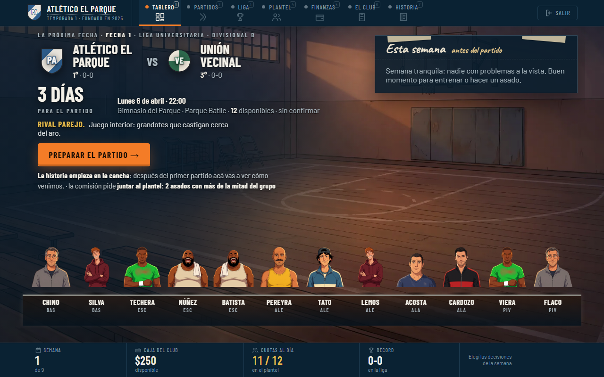
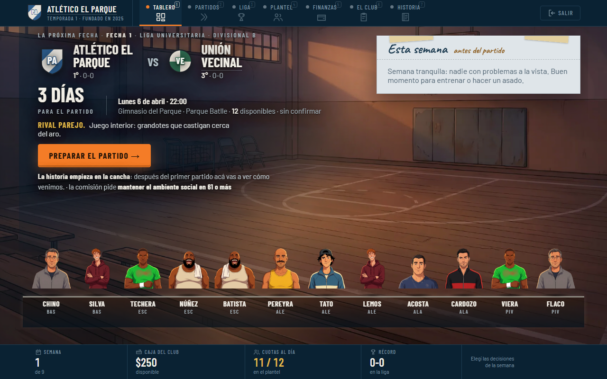
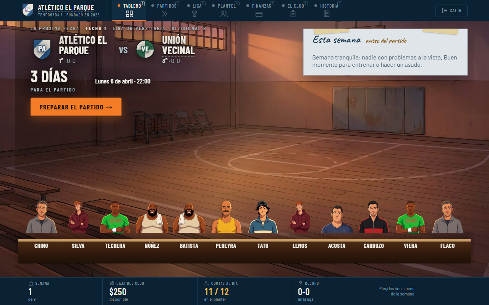
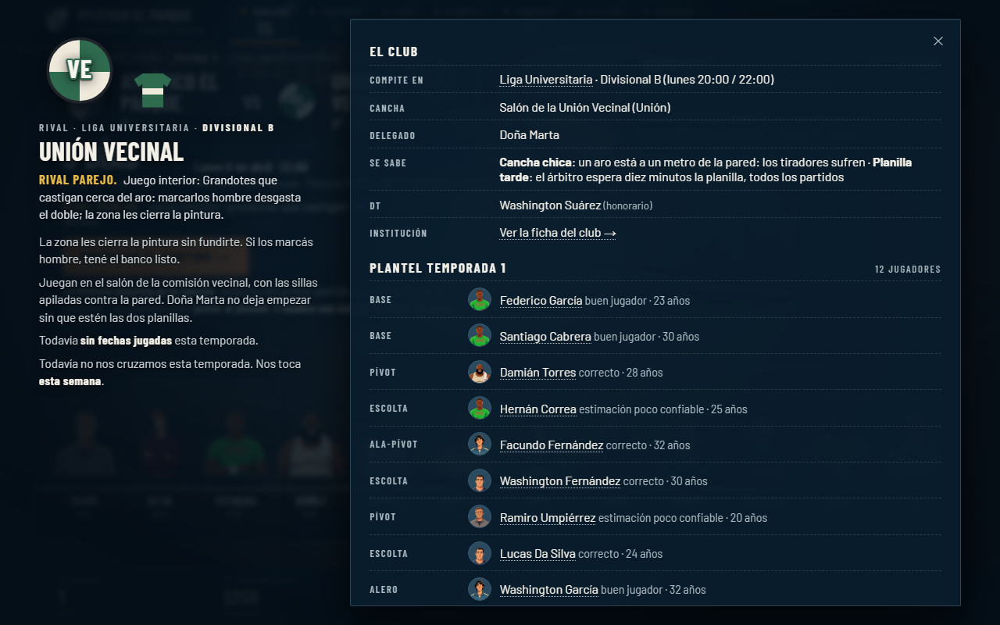
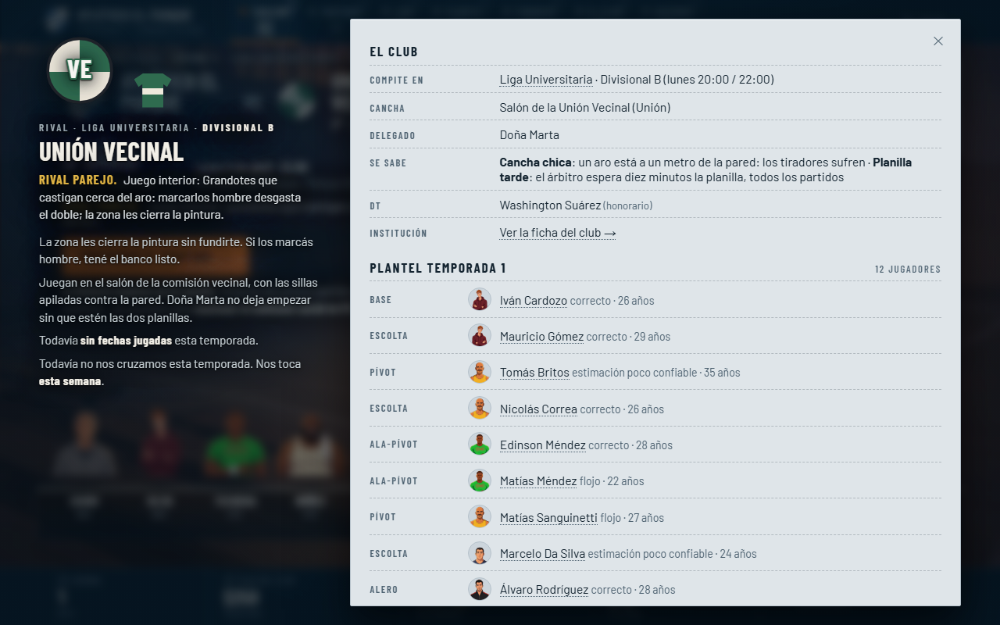
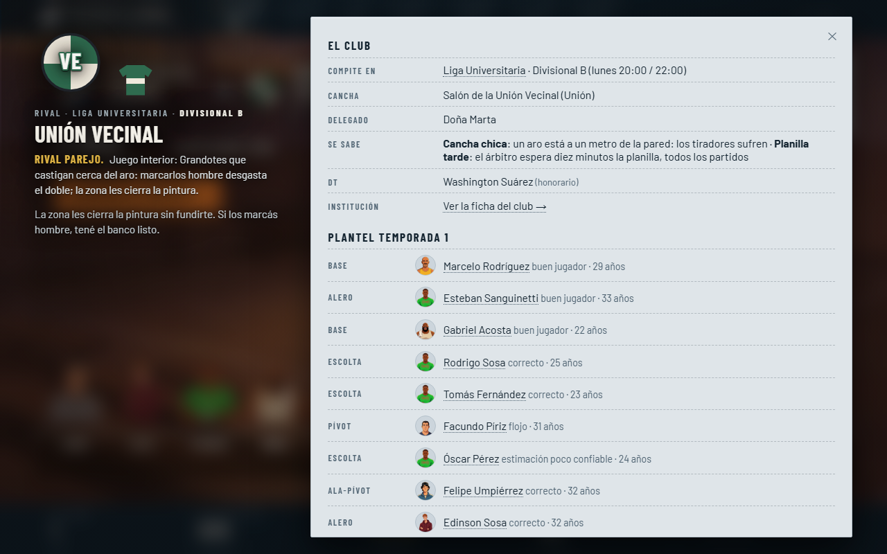

Prueba visual del 19/10/2026, sólo CSS, sin commit. Capturas a 1280×800 del dev server, partida directa recién creada (el plantel rival cambia entre capturas porque cada partida se genera al azar; el layout es el mismo). Las imágenes son grandes: hacé clic derecho → abrir en pestaña nueva para verlas a tamaño real.
Dos pasos, acumulativos, para decidir hasta dónde ir:
display: none sobre datos que siguen en el estado.





Tokens nuevos en :root de src/styles.css (sólo los usan las dos planillas claras; nada del shell los toca):
| Token | Valor | Para qué |
|---|---|---|
--perla-panel | #DFE5E9 | fondo de la planilla |
--perla-elevado | #D2D9DF | discos de íconos, tooltip |
--perla-pozo | #CCD5DC | pistas de barra, fondo de caritas |
--perla-borde | #B6C2CB | filete de la planilla |
--perla-tinta | #13232F | texto |
--perla-secundaria | #4D6170 | etiquetas, texto apagado |
--perla-good / --perla-warn / --perla-bad | #1e7f55 · #8a6508 · #c0392b | semáforo oscurecido para leerse sobre claro (los de la Paleta A no contrastan sobre #DFE5E9) |
Dentro de .tablero-semana y .ficha-hoja (selector en src/ui/v1.css, sin tocar TSX) se redefinen los tokens que ya usan las reglas de adentro: --panel, --panel-2, --bg-soft, --border, --linea-suave, --text, --text-dim, --text-faint, --good/--warn/--bad, --tiza (la mano pasa a marcador azul #1b3a4f), --relieve y --hundido.
Velos y degradés:
| Dónde | Antes | Después |
|---|---|---|
.fondo-app.abierta::after (styles.css; sólo el Tablero usa este modo) | azul noche #081d2d: radial 0.86→0.55, horizontal 0.55/0.15/0.25, vertical 0.35/0.35 | paso 1: azul a la mitad · paso 2: oscuro cálido #140c06, radial 0.22→0.10, vertical 0.10/0.22, sin degradé horizontal |
.fondo-app.abierta > .fondo-img (la ilustración) | saturate 1.1, brightness 1.12 | paso 2: saturate 1.2, brightness 1.3 |
.fondo-app.abierta::before (haz cálido) | 0.10 | 0.16 · paso 2: 0.20 |
.fila-depie-linea (v1.css, piso bajo los jugadores) | azul noche 0.55→0.90, bustos desvanecidos abajo | paso 1: 0.40→0.72 · paso 2: con el piso liviano los jugadores «flotaban» (Gabi), así que en el Tablero pasan a una baranda de madera opaca (#4b2b14→#1e1108, canto #c99a62) con el cuerpo cortado limpio, sin desvanecido ni sombrita (.tablero-plantel en Hub.css) |
.modal-backdrop:has(> .ficha) (modales.css; sólo fichas) | azul noche 0.74→0.93, blur 3px, saturate 0.8 | paso 1: 0.40→0.66, blur 6px · paso 2: oscuro cálido 0.30→0.58, blur 12px |
.tablero-hero::before y .ficha-heroe::before (nuevos) | — | banda local radial detrás del texto del héroe (paso 1: azul 0.62→0.34→0 · paso 2: oscuro cálido 0.50→0.26→0); sombra de texto más firme |
| Pantalla | Elemento | Dónde sigue viéndose |
|---|---|---|
| Tablero | .tablero-clave — «Rival parejo. Juego interior…» | ficha del rival |
| Tablero | .tablero-contexto — «La historia empieza en la cancha… la comisión pide…» | El club (objetivo), Partidos (último resultado) |
| Tablero | .tablero-cuando span — cancha · disponibles · sin confirmar | Preparar el partido / convocatoria |
| Tablero | .depie-sub — la posición bajo cada jugador | Plantel, ficha del jugador |
| Ficha | .ficha-heroe .v1-frase ~ .v1-frase — lore, racha, cruces con nosotros | se queda el primer consejo; el resto vive en la ficha del club y en Partidos |
| Ficha | .ficha-sub-extra — «12 jugadores» | contando los renglones |
Archivos tocados: src/styles.css, src/ui/v1.css, src/ui/Hub.css, src/ui/modales.css. Cada bloque lleva el comentario «PRUEBA 19/10/2026» (y «paso 2» los de la segunda vuelta) para encontrarlo o revertirlo por separado.